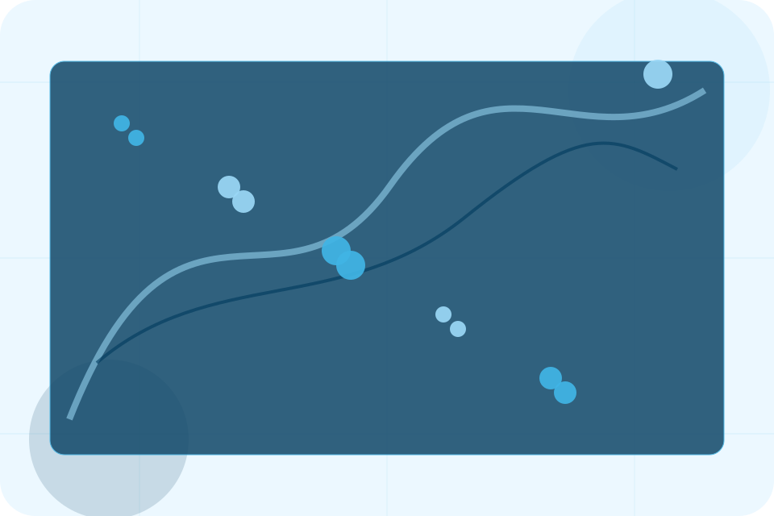
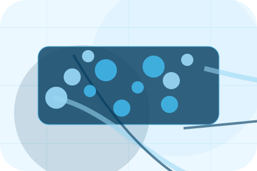
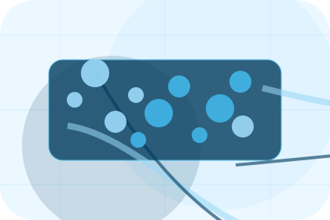
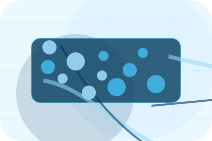
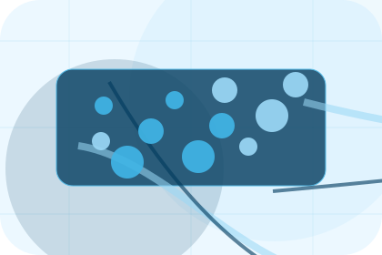
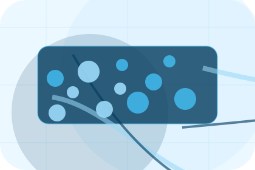
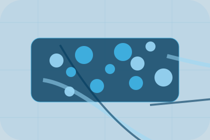

Fit
Who the offer is for, which scope it suits, and when a different route may be better.
Pricing / 01
Pricing opens as a clear maritime decision hub: what Port offers, who it helps, why it matters, and which route to take first.
The first screen combines positioning, proof, primary action, and fast internal navigation, so people can act immediately or compare the rest of the pricing route with context.
Shipping route hero
Select the closest route and Port keeps the next step, proof, and follow-up expectation aligned with cargo reliability and reach.

Pricing / 02
Cargo makes commercial comparison easier by showing fit, scope, and terms before maritime visitors ask for the next step.
The layout keeps price-sensitive decisions honest: it separates starting scope, fuller delivery, and ongoing support so the visitor can ask a sharper question.
Explore Pricing

Who the offer is for, which scope it suits, and when a different route may be better.
Pricing / 03
Route makes commercial comparison easier by showing fit, scope, and terms before maritime visitors ask for the next step.
The layout keeps price-sensitive decisions honest: it separates starting scope, fuller delivery, and ongoing support so the visitor can ask a sharper question.
Explore Pricing
Who the offer is for, which scope it suits, and when a different route may be better.

What is included clearly enough for maritime, shipping & marine services visitors to compare value without hidden jargon.

The practical details that should be confirmed before someone asks to request shipping.
Pricing / 04
Level makes commercial comparison easier by showing fit, scope, and terms before maritime visitors ask for the next step.
The layout keeps price-sensitive decisions honest: it separates starting scope, fuller delivery, and ongoing support so the visitor can ask a sharper question.
Explore PricingWho the offer is for, which scope it suits, and when a different route may be better.
What is included clearly enough for maritime, shipping & marine services visitors to compare value without hidden jargon.
The practical details that should be confirmed before someone asks to request shipping.
Pricing / 05
Fees makes commercial comparison easier by showing fit, scope, and terms before maritime visitors ask for the next step.
The layout keeps price-sensitive decisions honest: it separates starting scope, fuller delivery, and ongoing support so the visitor can ask a sharper question.
View PricingWho the offer is for, which scope it suits, and when a different route may be better.

What is included clearly enough for maritime, shipping & marine services visitors to compare value without hidden jargon.
The practical details that should be confirmed before someone asks to request shipping.
Who the offer is for, which scope it suits, and when a different route may be better.
ScopedWhat is included clearly enough for maritime, shipping & marine services visitors to compare value without hidden jargon.
QuotedThe practical details that should be confirmed before someone asks to request shipping.
RetainerPricing / 06
Contracts makes commercial comparison easier by showing fit, scope, and terms before maritime visitors ask for the next step.
The layout keeps price-sensitive decisions honest: it separates starting scope, fuller delivery, and ongoing support so the visitor can ask a sharper question.
Explore PricingWho the offer is for, which scope it suits, and when a different route may be better.
What is included clearly enough for maritime, shipping & marine services visitors to compare value without hidden jargon.
The practical details that should be confirmed before someone asks to request shipping.
Pricing / 07
Addons makes commercial comparison easier by showing fit, scope, and terms before maritime visitors ask for the next step.
The layout keeps price-sensitive decisions honest: it separates starting scope, fuller delivery, and ongoing support so the visitor can ask a sharper question.
Explore PricingWho the offer is for, which scope it suits, and when a different route may be better.
Pricing / 08
Terms makes commercial comparison easier by showing fit, scope, and terms before maritime visitors ask for the next step.
The layout keeps price-sensitive decisions honest: it separates starting scope, fuller delivery, and ongoing support so the visitor can ask a sharper question.
Explore PricingWho the offer is for, which scope it suits, and when a different route may be better.

What is included clearly enough for maritime, shipping & marine services visitors to compare value without hidden jargon.
The practical details that should be confirmed before someone asks to request shipping.
Pricing / 09
Quote converts customer proof into a useful buying signal: the problem, the experience, and what changed afterward.
Proof stays believable by focusing on situation, service experience, and practical change rather than vague praise or unsupported results.
Request ShippingWhat the visitor needed before choosing Port, written with enough context to feel real.
How the service, product, or support felt during the process, not just that it was good.
What became easier to decide, complete, buy, book, or trust after the interaction.
Pricing / 10
Port closes the pricing route with a clear action, a quick reminder of the value, and a low-friction way to request shipping.
Visitors who are ready can use the primary action. Visitors who are still comparing can scan the section links, proof, and support routes before they request shipping.
Request ShippingThe final block keeps the choice simple: act now, compare one more proof route, or send enough detail for a focused response.
Request Shippingcargo reliability and reach
A shipping site with ocean-blue service panels, cargo quote logic, port schedules, and tracking proof. Pricing ends with a direct path to request shipping, plus enough context for visitors who still need to compare.

Request ShippingInformation is provided for planning and should be reviewed for the final client, location, and operating rules.